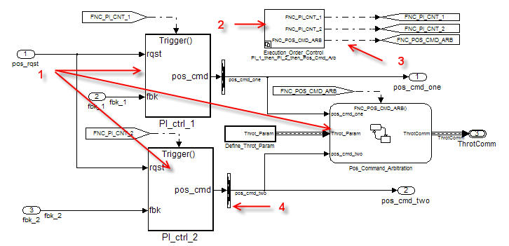
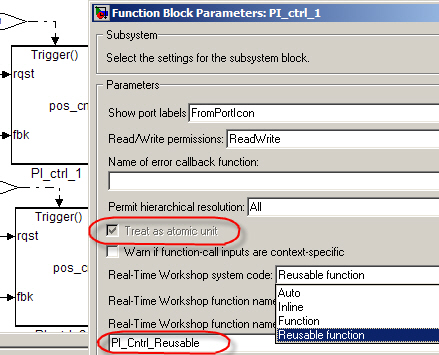
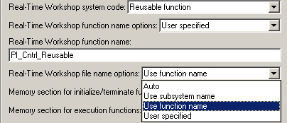
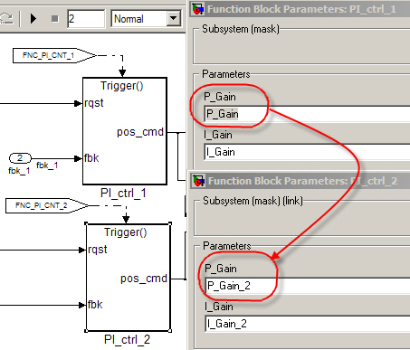
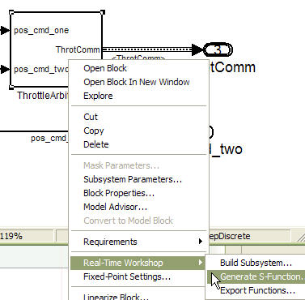
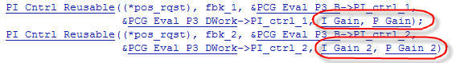
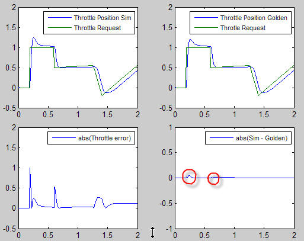

生成したコード内の関数を分割
概要:モデル内のサブシステムを固有の関数名とファイルに関連付ける方法を示します。
所要時間: 45 分
目的
理解する内容は次のとおりです。
- 生成したコード内での関数名とファイル名の指定方法
- 統合に必要な生成したコードの部分
- Atomic サブシステムのコードの生成方法
- 生成した関数を実行するために必要なデータ
目次
Atomic サブシステムとバーチャル サブシステム
「モデルの理解」と「データ インターフェイスの設定」のデモ モデルでは、バーチャル サブシステムを使用します。バーチャル サブシステムはブロックを視覚的に整理しますが、モデルの機能的な動作には影響しません。Atomic サブシステムは、インクルードされたすべてのブロックを 1 つのユニットとして評価します。さらに Atomic サブシステムを使用して、付加的な関数分割情報を指定することができます。Atomic サブシステムは、境界が太線で描かれます。
モデル アーキテクチャでの変化の表示
このモジュールは、デモ モデル内のバーチャル サブシステムを 関数呼び出しサブシステム に置き換える方法を示します。関数呼び出しサブシステムの特徴は以下のとおりです。
- 常に Atomic サブシステムである
- サブシステムの実行順を直接制御できる
- 関数呼び出し信号と関連付けられている
- 関数呼び出し信号がトリガーされたときに実行される
実行順を指定された既存のシステムにモデルが合致するように設計されている場合には、実行順の制御が必要になることがあります。
次の図は、関数呼び出しサブシステム (1) が PI_ctrl_1、PI_ctrl_2、Pos_Command_Arbitration であることを示しています。

サブシステム Execution_Order_Control (2) はモデルに追加されています。それはスケジューラーの呼び出し機能をモデル化する Stateflow チャートです。関数呼び出しサブシステムの実行順を制御します。後で、実行順の変更でシミュレーション結果がどのように変わるか、このデモで調査します。
関数の再入力を行うために、Signal Conversion ブロック (4) が PI コントローラーの出力ポートに追加されました。このモジュールの後半で、これについてさらに詳しく記述します。
生成したコードの関数位置とファイル配置を制御
「モデルの理解」と「データ インターフェイスの設定」では、Real-Time Workshop® はすべての制御アルゴリズム コードを含む単一の Model_step 関数を生成します。しかし多くのアプリケーションでは、生成されるコードの関数の位置をより大きなレベルで制御することが必要になります。Atomic サブシステムを使用することにより、複数の関数を単一のモデル内で指定することができます。この情報はサブシステム パラメーターを変更して指定します。
次の図は PI_ctrl_1 のサブシステム パラメーターを示し、キー パラメーターは以下のとおりです。

- Atomic サブシステムとして扱う
他のサブメニューを有効にします。 このパラメーターは自動的に選択され、Atomic サブシステムでは使用できません。 - サンプル時間
サンプル時間を指定します。 関数呼び出しサブシステムにはありません。 - Real-Time Workshop システム コード
- Auto: Real-Time Workshop は生成コード内でのサブシステムの配置方法を決定します。 これは既定の設定です。
- Inline: Real-Time Workshop はサブシステム コードをモデル コードの残り部分とインラインに配置します。
- Function: Real-Time Workshop はサブシステム用のコードを関数として生成します。
- 再利用可能な関数: Real-Time Workshop はサブシステムから再利用可能な関数を生成します。 すべての入力と出力は引数または参照として関数に渡されます。 グローバル変数は関数に渡されません。
- Real-Time Workshop 関数名オプション
[関数] または [再利用可能な関数] を選択すると、関数名オプションが有効になります。- 自動: Real-Time Workshop が関数を決定します。
- サブシステム名を使用: サブシステム名に基づく関数を使用します。
- ユーザー指定: 一意のファイル名を指定します。
- Real-Time Workshop ファイル名オプション
[Function] または [再利用可能な関数] を選択すると、ファイル名オプションが有効になります。- 自動: Real-Time Workshop が、サブシステムの親システムから生成されたモジュール内で、またはサブシステムの親がモデルそのものであれば model.c ファイル内で関数コードを生成します。
- サブシステム名を使用: Real-Time Workshop が別のファイルを生成し、それにサブシステムの名前またはライブラリ ブロックの名前を付けます。
- 関数名を使用: Real-Time Workshop が別のファイルを生成し、それにReal-Time Workshop 関数名オプションで指定した関数名を付けます。
- ユーザー指定: 一意のファイル名を指定します。
- 別データを持つ関数
Real-Time Workshop システム コードを [Function] に設定した場合に有効になります。 これをオンにすると、Real-Time Workshop Embedded Coder(TM) はサブシステム関数コードを生成し、その中で Atomic サブシステム用の内部データは親モデルから分離されてサブシステムに所有されます。
再入力可能なコードの理解
Real-Time Workshop Embedded Coder は再入力可能コードをサポートしています。再入力可能コードは複数のプログラムで同時に使用できるプログラミング ルーチンです。再入力可能コードは、オペレーティング システムや同時発生イベントを処理するマルチスレッドを使うその他のシステム ソフトウェアで使用されています。再入力可能コードは状態のデータを維持しません。つまり、関数内に持続変数はありません。呼び出し側のプログラムが状態変数を維持し、状態変数を関数に渡す必要があります。再入力可能ルーチンのコピーは、数多くのユーザーやプロセスで共有できます。
再入力可能 (再利用可能) コードを生成するには、まず再利用の候補になるサブシステムを指定しなければなりません。これは [サブシステム パラメーター] ダイアログで行います。

モデルの設定により、Real-Time Workshop で再利用可能コードを生成することができない場合もあります。再入力可能コードの生成ができない主な原因と解決法は次のとおりです。
| 原因 | 解決法 |
| サブシステムの出力ポートにグローバル データを使用している | サブシステムと信号定義の間に信号変換ブロックを追加する |
| システムにデータをポインターとして渡している | モデル エクスプローラーの [Configuration] > [モデル参照] > [Real-Time Workshop コード生成] で固定サイズのスカラのルート入力を値渡しで行う] を を有効にする |
| サブシステム内でグローバル データを使用している | サブシステム内外にグローバル データを渡すポートを使用する |
パラメーターをライブラリ サブシステムに渡すマスクの使用
サブシステム masks により、Simulink® がライブラリ ブロックのスコープ外でサブシステム パラメーターを定義できるようになります。ライブラリの一番上でパラメーター値を変更すると、同じモデル内にある複数のパラメーター セットで同じライブラリを使用できるようになります。
サブシステムが再利用可能でマスクされている場合、Real-Time Workshop はマスクされたパラメーターを再入力可能なコードに引数として渡します。Real-Time Workshop はマスクでのデータ オブジェクトの使用を完全にサポートしています。データ オブジェクトは生成したコード内で使用されます。
このデモでは、サブシステム PI_ctrl_1 と PI_ctrl_2 はマスクされています。P と I のゲイン値はサブシステム マスク内で設定します。2 つの新しいデータ オブジェクト、P_Gain_2 と I_Gain_2 が作成されます。

Atomic サブシステム用のコード生成
「モデルの理解」と「データ インターフェイスの設定」では、モデルのルート レベルでコードを生成しました。システム レベルでの作成の他に、次の図に示すようにサブシステム レベルで作成することもできます。

コンテキスト メニューを右クリックして、サブシステムのビルドを開始します。サブシステムのビルドでは 3 つの異なるオプションがサポートされています。
- サブシステムをビルド
サブシステムは別のモデルとして扱われます。 サブシステム用にソース C ファイルとヘッダー ファイルのフル セットが作成されます。 関数呼び出しサブシステムはサポートされていません。 - S-Function を生成
サブシステム用に C コードを生成し、S-Function ラッパーを作成します。 そして元の Simulink モデル内でコードのシミュレーションを行います。 関数呼び出しサブシステムはサポートされていません。 - 関数をエクスポート
[サブシステムをビルド] オプションと関連付けられているスケジューリング コードを使用せずに C コードを作成します。 [関数をエクスポート] はトリガーを使用するサブシステムを作成する場合に必要になります。
コード生成
このモジュールは、フル システム ビルド用に生成したファイルとエクスポート関数用に生成したファイルとを比較します。このモジュールは、マスクされたデータのコード内での配置の検証も行います。
3 つすべてのケースについてビルド スクリプトを実行し、下の表にリストされている生成ファイルを [はい] リンクをクリックして検証します。
タスク: エクスポート関数 Pos_Command_Arbitration
| ファイル | フル ビルド | PI_ctrl_1 | Pos_Command_Arbitration |
| rtwdemo_PCG_Eval_P3.c | はい ステップ関数 |
いいえ | いいえ |
| PI_ctrl_1.c | いいえ | はい トリガー関数 |
いいえ |
| Pos_Command_Arbitration.c | いいえ | いいえ | はい Init および関数 |
| PI_Ctrl_Reusable.c | はい メインに呼び出される |
はい PI_ctrl_1 に呼び出される |
いいえ |
| ert_main.c | はい | はい | はい |
| eval_data.c | はい(1) | はい(1) | いいえ 評価データはブロック線図で使用されない |
(1) eval_data.c のコンテンツは完全なビルドとエクスポート関数のビルドでは異なります。完全なビルドにはモデルで使用されるすべてのパラメーターが含まれますが、エクスポート関数にはサブシステムで使用される変数だけが含まれます。
生成したコードのマスクされたデータ
ファイル rtwdemo_PCG_Eval_P3.c のコードは、データ オブジェクトがマスク (P_Gain および I_Gain) と P_Gain_2 および I_Gain_2 から再入力可能コードに渡される方法を示しています。

シミュレーション結果への実行順の影響
明示的に制御しない場合、Simulink はサブシステムの実行順を次のように設定します。
- PI_ctrl_1
- PI_ctrl_2
- Pos_Cmd_Arbitration
このデモでは、2 つの代替順序を設定することができます。テスト ハーネスを使用してシミュレーション結果に対する実行順の影響を見てみましょう。サブシステム Execution_Order_Control は設定可能なサブシステムで、サブシステムの実行順を変更する 2 つの設定値を持っています。
次のタスクを行って、結果を確認します。
タスク: 実行順を PI_cntl_1、PI_cntrl_2、Pos_cmd_Arbitration に設定します。
タスク: 実行順を Pos_cmd_Arbitration、PI_cntl_1、PI_cntrl_2 に変更します。
次の図のように、実行順に応じて、出力結果にわずかな変化が生じています。出力の変化は、目的の入力が変化する場合に顕著になっています。
